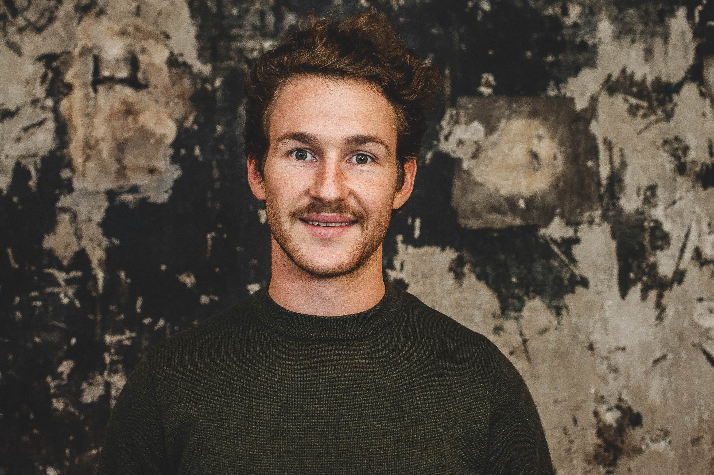

Hi all, I'm Thibaud
I graduated from an engineering school in 2016. Since then, I have been working as a consultant. The introductory classes in school and the different missions I did as a product owner drove me to Le Wagon 👨‍💻. In the short term, I will continue exploring consulting to strengthen my knowledge in the mobility field 🚅 🚲 🚠🛴 🚀. In the long run I will find a way to articulate mobility and coding.
Web Development
I attended Le Wagon PARIS (Batch #321). 9-week intensive coding bootcamp learning HTML, CSS, Bootstrap, JavaScript ES2015, SQL, git, GitHub, Heroku and Ruby on Rails. Designed, implemented and shipped to production several projects.
Discover my projectsPhotos 📸
I like taking my camera everywhere I go, especially in Paris. Here are some pictures taken in the french capital 🇫🇷.


Rugby 🏉
I have played rugby for 15 years 🏉. I am involved in the management of the Ponts et Chaussées alumni team. Check our facebook page and send us some love 🤗.
Vieux Rugbymen des Ponts